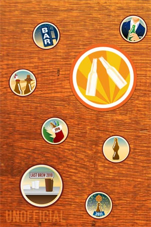
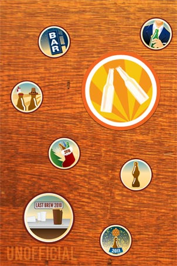

iTappd
The First Native iPhone App for Untappd
 

-
Feed
See your friends', neighbors', and the world's latest brews along with their thoughts and location.
-
Drink Up
Use the quick search to find the brew you are enjoying.
-
Check In
Then,check in your beer and tasting notes, snap a picture of your beer with Flickr, add your location on foursquare, and share it all on Facebook and Twitter!
-
More Info
Get the 411 of every check-in like comments, venues, maps, and now more detailed beer info.
-
Beer Details
Learn more about the beer you or anyone else is enjoying.
A native iPhone App means FASTER loading, a smoother interface, and multitasking which results in less time trying to check-in and more time enjoying quality brew.